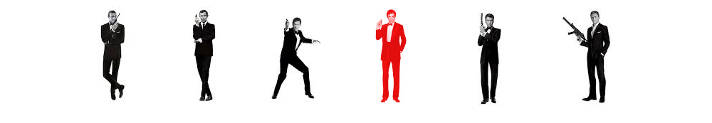
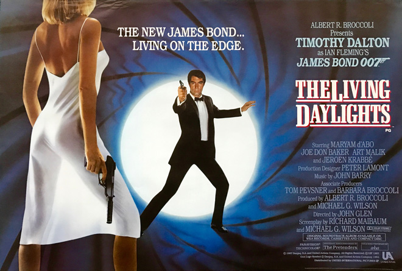
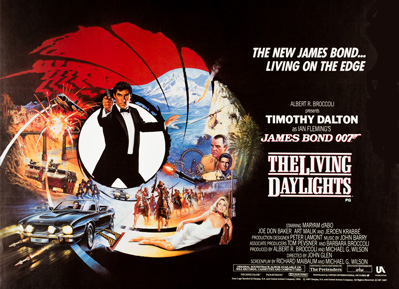
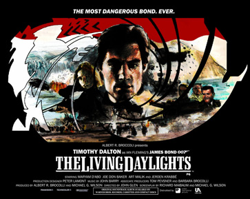
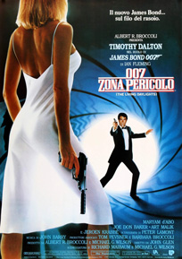
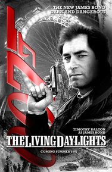
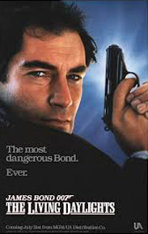

Michael G. Wilson
Richard Maibaum
Michael G. Wilson
Peter Davies
United International Pictures (International)
"The Living Daylights" (John Barry and Paul Waaktaar-Savoy)
James Bond is assigned to aid the defection of a KGB officer, General Georgi Koskov, covering his escape from a concert hall in Bratislava, Czechoslovakia during intermission. During the mission, Bond notices that the KGB sniper assigned to prevent Koskov's escape is a female cellist from the orchestra. Disobeying his orders to kill the sniper, he instead shoots the rifle from her hands, then uses the Trans-Siberian Pipeline to smuggle Koskov across the border into Austria and then on to Britain.
In his post-defection debriefing, Koskov informs MI6 that the KGB's old policy of Smiert Spionam, meaning Death to Spies, has been revived by General Leonid Pushkin, the new head of the KGB. Koskov is later abducted from the safe-house and assumed to have been taken back to Moscow. Bond is directed to track down Pushkin in Tangier and kill him to forestall further killings of agents and escalation of tensions between the Soviet Union and the West. Bond agrees to carry out the mission when he learns that the assassin who killed 004 (as depicted in the pre-title sequence) left a note bearing the same message, "Smiert Spionam".
Bond returns to Bratislava to track down the cellist, Kara Milovy. He determines that Koskov's entire defection was staged, and that Kara is actually Koskov's girlfriend. Bond convinces Kara that he is a friend of Koskov's and persuades her to accompany him to Vienna, supposedly to be reunited with him. They escape Bratislava while being pursued by the KGB, crossing over the border into Austria. Meanwhile, Pushkin meets with an arms dealer, Brad Whitaker, in Tangier, informing him that the KGB is cancelling an arms deal previously arranged between Koskov and Whitaker.
During his brief tryst with Milovy in Vienna, Bond visits the Prater to meet his MI6 ally, Saunders, who discovers a history of financial dealings between Koskov and Whitaker. As he leaves their meeting, Saunders is killed by Koskov's henchman Necros, who again leaves the message "Smiert Spionam". Bond and Kara promptly leave for Tangier, where Bond confronts Pushkin. Pushkin disavows any knowledge of "Smiert Spionam", and reveals that Koskov is evading arrest for embezzlement of government funds. Bond and Pushkin then join forces and Bond fakes Pushkin's assassination, inducing Whitaker and Koskov to progress with their scheme. Meanwhile, Kara contacts Koskov, who tells her that Bond is actually a KGB agent and convinces her to drug him so he can be captured.
Koskov, Necros, Kara, and the captive Bond fly to a Soviet air base in Afghanistan, where Koskov betrays Kara and imprisons her along with Bond. The pair escape and in doing so free a condemned prisoner, Kamran Shah, leader of the local Mujahideen. Bond and Milovy discover that Koskov is using Soviet funds to buy a massive shipment of opium from the Mujahideen, intending to keep the profits with enough left over to supply the Soviets with their arms and buy Western arms from Whitaker.
With the Mujahideen's help, Bond plants a bomb aboard the cargo plane carrying the opium, but is spotted and has no choice but to barricade himself in the plane. Meanwhile, the Mujahideen attack the air base on horseback and engage the Soviets in a gun battle. During the battle, Milovy drives a jeep into the cargo hold of the plane as Bond takes off, and Necros also leaps aboard at the last second. After a struggle, Bond throws Necros to his death and deactivates the bomb. Bond then notices Shah and his men being pursued by Soviet forces. He re-activates the bomb and drops it out of the plane and onto a bridge, blowing it up and helping Shah and his men gain an important victory over the Soviets. Bond returns to Tangier to kill Whitaker, infiltrating his estate with the help of his ally Felix Leiter, as Pushkin arrests Koskov, sending him back to Moscow.
Some time later, Kara is the solo cellist in a Wien performance. Kamran Shah and his men arrive during the intermission and are introduced to now-diplomat General Gogol and the Soviets. After her performance, Bond surprises Kara in her dressing room, and they embrace.
In Autumn 1985, following the financial and critical disappointment of A View to a Kill, work began on scripts for the next Bond film, with the intention that Roger Moore would not reprise the role of James Bond. Moore, who by the time of the release of The Living Daylights would have been 59 years old, chose to retire from the role after 12 years and 7 films. Albert Broccoli, however, claimed that he let Moore go from the role. An extensive search for a new actor to play Bond saw a number of actors, including New Zealander Sam Neill, Irish-born Pierce Brosnan and Welshman Timothy Dalton audition for the role in 1986. Bond co-producer Michael G. Wilson, director John Glen, Dana and Barbara Broccoli "were impressed with Sam Neill and very much wanted to use him." However, Albert Broccoli was not sold on the actor.
The producers eventually offered the role to Brosnan after a three-day screen-test. At the time, he was contracted to the television show Remington Steele which had been cancelled by the NBC network due to falling ratings. The announcement that he would be chosen to play James Bond caused a surge in interest in the series, which led to NBC exercising (less than three days prior to expiry) a 60-day option in Brosnan's contract to make a further season of the show. NBC's action caused drastic repercussions, as a result of which Albert Broccoli withdrew the offer given to Brosnan, citing that he did not want the character associated with a contemporary TV series. This led to a drop in interest in Remington Steele, and only five new episodes were filmed before the show was finally cancelled. The edict from Broccoli was that "Remington Steele will not be James Bond."
Dana Broccoli suggested Timothy Dalton. Albert Broccoli was initially reluctant given Dalton's public lack of interest in the role but, at his wife's urging, agreed to meet the actor. However Dalton would soon begin filming Brenda Starr and so would be unavailable. In the intervening period, having completed Brenda Starr, Dalton was offered the role once again, which he accepted. For a period, the filmmakers felt they had Dalton, but he had not signed a contract. A casting director persuaded Robert Bathurst, an English actor who would become known for his roles in Joking Apart, Cold Feet and Downton Abbey to audition for Bond. Bathurst believes that his "ludicrous audition" was only "an arm-twisting exercise" because the producers wanted to persuade Dalton to take the role by telling him they were still auditioning other actors. Other actors considered for the role of James Bond included Mel Gibson, Mark Greenstreet, Lambert Wilson, Antony Hamilton, Christopher Lambert, Finlay Light and Andrew Clarke.
The English actress Maryam d'Abo, who was also a former model, was cast as the Czechoslovakian cellist Kara Milovy. In 1984, d'Abo had attended auditions for the role of Pola Ivanova in A View to a Kill. Barbara Broccoli included d'Abo in the audition for playing Kara, which she later passed.
Originally, the KGB general set up by Koskov was to be General Gogol; however, Walter Gotell was too sick to handle the major role, and the character of Leonid Pushkin replaced Gogol, who appears briefly at the end of the film, having transferred to the Soviet diplomatic service. This was Gogol's final appearance in a James Bond film. Morten Harket, the lead vocalist of the Norwegian rock group A-ha (which performed the film's title song), was offered a small role as a villain's henchman in the film, but declined, because of lack of time and because he felt they wanted to cast him due to his popularity rather than his acting.
Director John Glen decided to include the macaw from For Your Eyes Only. It can be seen squawking in the kitchen of Blayden House when Necros attacks MI6's officers.
The film was shot at Pinewood Studios at its 007 Stage in the United Kingdom, as well as Weissensee in Austria. The pre-title sequence was filmed on the Rock of Gibraltar and although the sequence shows a hijacked Land Rover careering down various sections of road for several minutes before bursting through a wall towards the sea, the location mostly used the same short stretch of road at the very top of the Rock, shot from numerous different angles. The beach defences seen at the foot of the Rock in the initial shot were also added solely for the film, to an otherwise non-military area. The action involving the Land Rover switched from Gibraltar to Beachy Head in the UK for the shot showing the vehicle actually getting airborne. Trial runs of the stunt with the Land Rover, during which Bond escapes by parachute from the tumbling vehicle, were filmed in the Mojave Desert, although the final cut of the film uses a shot achieved using a dummy. Other locations included Germany, the United States, and Italy, while the desert scenes were shot in Ouarzazate, Morocco. The conclusion of the film was shot at the Schönbrunn Palace, Vienna and Elveden Hall, Suffolk.
Principal photography commenced at Gibraltar on 17 September 1986. Aerial stuntmen B. J. Worth and Jake Lombard performed the pre-credits parachute jump. Both the terrain and wind were unfavourable. Consideration was given to the stunt being done using cranes but aerial stunts arranger B. J. Worth stuck to skydiving and completed the scenes in a day. The aircraft used for the jump was a C-130 Hercules, which in the film had M's office installed in the aircraft cabin. The initial point of view for the scene shows M in what appears to be his usual London office, but the camera then zooms out to reveal that it is, in fact, inside an aircraft. Although marked as a Royal Air Force aircraft, the one in shot belonged to the Spanish Air Force and was used again later in the film for the Afghanistan sequences, this time in "Russian" markings. During this later chapter, a fight breaks out on the open ramp of the aircraft in flight between Bond and Necros, before Necros falls to his death. Although the plot and preceding shots suggest the aircraft is a C-130, the shot of Necros falling away from the aircraft show a twin engine cargo plane, a C-123 Provider. Worth and Lombard also doubled for Bond and Necros in the scenes where they are hanging on a bag in a plane's open cargo door.
The press would not meet Dalton and d'Abo until 5 October 1986, when the main unit travelled to Vienna. Almost two weeks after the second unit filming on Gibraltar, the first unit started shooting with Andreas Wisniewski and stunt man Bill Weston. During the course of the three days it took to film this fight, Weston fractured a finger and Wisniewski knocked him out once. The next day found the crew on location at Stonor House, doubling for Bladen's Safe House, the first scene Jeroen Krabbé filmed.
The film reunites Bond with the car maker Aston Martin. Following Bond's use of the Aston Martin DBS in On Her Majesty's Secret Service, the filmmakers then turned to the brand new Lotus Esprit in 1977's The Spy Who Loved Me, which reappeared four years later in For Your Eyes Only. Despite the iconic status of the submersible Lotus however, Bond's Aston Martin DB5 is recognised as the most famous of his vehicles. As a consequence, Aston Martin returned with their V8 Vantage.
Two different Aston Martin models were used in filming - a V8 Volante convertible, and later for the Czechoslovakia scenes, a hard-top non-Volante V8 saloon badged to look like the Volante. The Volante was a production model owned by Aston Martin Lagonda chairman, Victor Gauntlett.




